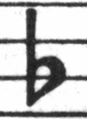
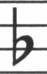

| [ << A kottaszedés ] | [Címoldal][Tartalom][Tárgymutató][ ? ] | [ Irodalomjegyzék >> ] | ||
| [ < A LilyPond története ] | [ Fel: A kottaszedés ] | [ A kottában használt betűtípusok > ] | ||
1.2 A kottaszedés fortélyai
A zeneművek nyomdai előkészítését kottaszedésnek nevezik. Ez a kifejezés a kották nyomtatásának hagyományos, kézi módszerére utal.1 Ez a folyamat még a 20. században első felében is úgy nézett ki, hogy a kotta elemeit kivágták, majd tükrözve belemélyesztették egy cink- vagy ónlemezbe. A lemezre ezután festéket hordtak fel, és a festék a bemélyedésekben maradt. A lemez a papírra rányomva a kotta képét adta. A metszést teljesen kézzel végezték, és bárminemű javítás nagyon körülményes volt, így a kottakép elsőre tökéletes kellett, hogy legyen. A kottaszedés tudománya nagyon különleges szakma, ahol a kézművesnek körülbelül öt éves képzést kellett elvégeznie, mielőtt a mester címet kérvényezhette. További öt év volt szükséges ahhoz, hogy a szakma minden csínját-bínját valóban magáénak tudhassa.

A LilyPond megalkotását azok a kézzel szedett kották inspirálták, amelyeket a 20. század közepe felé az európai kottakiadók (többek között Bärenreiter, Duhem, Durand, Hofmeister, Peters és Schott) hoztak forgalomba. Munkásságukat bizonyos szempontból a hagyományos kottaszedés csúcsának lehet tekinteni. Kiadványaik tanulmányozásával rengeteget tanultunk arról, mik az ismertetőjelei egy szép tipográfiájú kottának, és milyen szempontokat szeretnénk a LilyPonddal utánozni.
| A kottában használt betűtípusok | ||
| Optical spacing | ||
| Ledger lines | ||
| Optical sizing | ||
| Why work so hard? |
| [ << A kottaszedés ] | [Címoldal][Tartalom][Tárgymutató][ ? ] | [ Irodalomjegyzék >> ] | ||
| [ < A kottaszedés fortélyai ] | [ Fel: A kottaszedés fortélyai ] | [ Optical spacing > ] | ||
A kottában használt betűtípusok
A lenti ábra jól mutatja a különbséget egy hagyományosan és egy számítógép által szedett kottaelem közt. A bal oldali képen egy beszkennelt b módosítójel látható egy kézi Bärenreiter kiadásból, míg a jobb oldali ugyanennek a zeneműnek 2000-ben kiadott változatából származik. Noha mindkét képet ugyanolyan árnyalatú tintával nyomtatták, a régebbi verzió sötétebb: a kottasorok vonalai vastagabbak, és a Bärenreiter b-je gömbölyded, majdhogynem érzékien kerek. A jobb oldali kép vonalai ezzel szemben vékonyabbak, elrendezése szögletes, sarkai élesek.
|  |  | |
| Bärenreiter (1950) | Henle (2000) |
Amikor úgy döntöttük, hogy írunk egy kottaszedő programot, nem volt olyan, szabad felhasználású zenei betűtípus, ami jól passzolt volna kedvenc kottáink elegáns kottaképéhez. Ezen felbuzdulva megalkottunk egy zenei szimbólumokból álló betűtípust, amely a kézzel szedett kották szemrevaló kinézetét veszi alapul. A betűtípus megtervezése során szerzett tapasztalatok nélkül soha nem ismertük volna fel, milyen csúnyák is azok a betűtípusok, amiket eleinte csodáltunk.
Lent két zenei betűkészletre láthatunk példát: a felső a Sibelius alapbeállítású készlete (Opus), az alsó a LilyPondé.

A LilyPond kottaelemei vastagabbak, valamint vastagságuk konzisztensebb, ami miatt jóval egyszerűbb az olvasásuk. A vonalaknak, mint például a negyed szünet szárnyai, nem hegyes végük van, hanem finoman legömbölyített. Ennek oka, hogy a hegyes végek a hagyományos nyomóformán nagyon törékenyek, és a használat közben gyorsan elkopnak. Összefoglalva, a jelkészlet teltségét gondosan össze kell hangolni a vonalak (gerendák, ívek) vastagságával, hogy erős, mégis kiegyensúlyozott összképet kapjunk.
Vegyük észre továbbá, hogy a félkotta feje nem ellipszis, hanem enyhén rombusz alakú. A b módosítójel függőleges szára felfelé némileg kiszélesedik. A keresztet és a feloldójelet egyszerűbb távolról megkülönböztetni, mert ferde vonalaiknak eltérő a dőlésszöge, illetve függőleges vonalaik különböző vastagságúak.
| [ << A kottaszedés ] | [Címoldal][Tartalom][Tárgymutató][ ? ] | [ Irodalomjegyzék >> ] | ||
| [ < A kottában használt betűtípusok ] | [ Fel: A kottaszedés fortélyai ] | [ Ledger lines > ] | ||
Optical spacing
In spacing, the distribution of space should reflect the durations between notes. However, as we saw in the Bach Suite above, many modern scores adhere to the durations with mathematical precision, which leads to poor results. In the next example a motif is printed twice: the first time using exact mathematical spacing, and the second with corrections. Which do you prefer?
![[image of music]](../6c/lily-15c3b141.png)
![[image of music]](../95/lily-184c0193.png)
Each bar in the fragment only uses notes that are played in a constant rhythm. The spacing should reflect that. Unfortunately, the eye deceives us a little; not only does it notice the distance between note heads, it also takes into account the distance between consecutive stems. As a result, the notes of an up-stem/down-stem combination should be put farther apart, and the notes of a down-stem/up-stem combination should be put closer together, all depending on the combined vertical positions of the notes. The lower two measures are printed with this correction, the upper two measures, however, form down-stem/up-stem clumps of notes. A master engraver would adjust the spacing as needed to please the eye.
The spacing algorithms in LilyPond even take the barlines into account, which is why the final up-stem in the properly spaced example has been given a little more space before the barline to keep it from looking crowded. A down-stem would not need this adjustment.
| [ << A kottaszedés ] | [Címoldal][Tartalom][Tárgymutató][ ? ] | [ Irodalomjegyzék >> ] | ||
| [ < Optical spacing ] | [ Fel: A kottaszedés fortélyai ] | [ Optical sizing > ] | ||
Ledger lines
Ledger lines present a typographical challenge: they make it more difficult to space musical symbols close together and they must be clear enough to identify the pitch at a glance. In the example below, we see that ledger lines should be thicker than normal staff lines and that an expert engraver will shorten a ledger line to allow closer spacing with accidentals. We have included this feature in LilyPond’s engraving.
 |  |
| [ << A kottaszedés ] | [Címoldal][Tartalom][Tárgymutató][ ? ] | [ Irodalomjegyzék >> ] | ||
| [ < Ledger lines ] | [ Fel: A kottaszedés fortélyai ] | [ Why work so hard? > ] | ||
Optical sizing
Music may need to be printed in a range of sizes. Originally, this was accomplished by creating punching dies in each of the required sizes, which meant that each die was designed to look its best at that size. With the advent of digital fonts, a single outline can be mathematically scaled to any size, which is very convenient, but at the smaller sizes the glyphs will appear very light.
In LilyPond, we have created fonts in a range of weights, corresponding to a range of music sizes. This is a LilyPond engraving at staff size 26:

and this is the same engraving set at staff size 11, then magnified by 236% to print at the same size as the previous example:

At smaller sizes, LilyPond uses proportionally heavier lines so the music will still read well.
This also allows staves of different sizes to coexist peacefully when used together on the same page:
![[image of music]](../73/lily-f7887b3b.png)
| [ << A kottaszedés ] | [Címoldal][Tartalom][Tárgymutató][ ? ] | [ Irodalomjegyzék >> ] | ||
| [ < Optical sizing ] | [ Fel: A kottaszedés fortélyai ] | [ Automated engraving > ] | ||
Why work so hard?
Musicians are usually more absorbed with performing than with studying the looks of a piece of music, so nitpicking typographical details may seem academic. But it is not. Sheet music is performance material: everything is done to aid the musician in letting her perform better, and anything that is unclear or unpleasant to read is a hindrance.
Traditionally engraved music uses bold symbols on heavy staff to create a strong, well-balanced look that stands out well when the music is far away from the reader: for example, if it is on a music stand. A careful distribution of white space allows music to be set very tightly without crowding symbols together. The result minimizes the number of page turns, which is a great advantage.
This is a common characteristic of typography. Layout should be pretty, not only for its own sake, but especially because it helps the reader in his task. For sheet music this is of double importance because musicians have a limited amount of attention. The less attention they need for reading, the more they can focus on playing the music. In other words, better typography translates to better performances.
These examples demonstrate that music typography is an art that is subtle and complex, and that producing it requires considerable expertise, which musicians usually do not have. LilyPond is our effort to bring the graphical excellence of hand-engraved music to the computer age, and make it available to normal musicians. We have tuned our algorithms, font-designs, and program settings to produce prints that match the quality of the old editions we love to see and love to play from.
Lábjegyzet
[1] A régi idők nyomdászai különböző technikákat próbáltak ki, mint például a kézzel metszett fa nyomóformák (nyomódúc), a mozgatható betű- és nyomóelemek, illetve a gravírozott vékony fémlemezek. A mozgatható betű- és nyomóelemekkel való szedésnek megvolt az az előnye, hogy gyorsan bele lehetett javítani és egyszerűen lehetett szöveget is beleilleszteni. De csak a fémlemezre végzett hangjegymetszés tette lehetővé a hibátlan elrendezést és az új kottaelemek gyors bevezetését. Végül ez utóbbi technika lett a szabvány, és még a 20. század elején is ez volt a helyzet, pár korálkönyv és daloskönyv kivételével, ahol a sablonelemek használatát annak gazdaságossága és gyorsasága indokolta.
| [ << A kottaszedés ] | [Címoldal][Tartalom][Tárgymutató][ ? ] | [ Irodalomjegyzék >> ] | ||
| [ < Optical sizing ] | [ Fel: A kottaszedés fortélyai ] | [ Automated engraving > ] | ||
Más nyelvek: English, deutsch, español, français, italiano.
About automatic language selection.